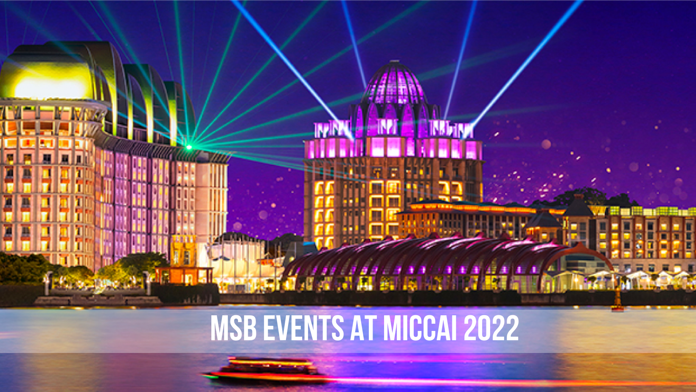
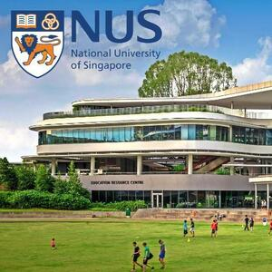
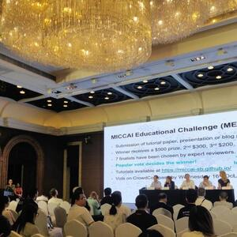
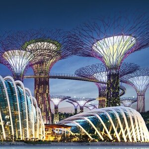
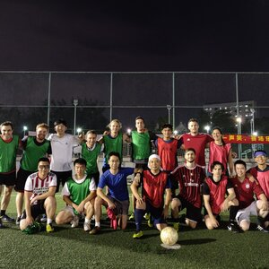
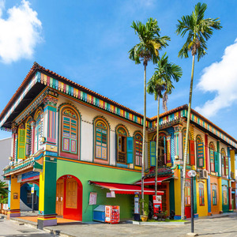

Participate in MSB Events at MICCAI 2022

September 18, 2022: Campus Visit to NUS and NTU
The National University of Singapore (NUS) and Nanyang Technological University (NTU) are among the top universities in the world. We will take you on a journey through the most beatiful and innovative university campuses in Singapore.
September 19, 2022: Academia and Industry Panel and Networking Event
The MSB has a goal to provide opportunities for professional development and networking. The A&I event educates current students on career possibilities post graduation, and provides students a venue to ask questions related to professional development. this event will begin with a one-hour moderated panel discussion on career development and the differences between academic and corporate research. Panelists are selected to represent a diverse set of backgrounds, perspectives and experiences. The second hour of the A&I event will be used for a networking session.
September 21, 2022: Gardens by the Bay Tour
One of Singapore's most iconic places is the magical Gardens by the Bay. In this opportunity, we will visit two of their most important attractions in the evening - the Flower Dome, where we will learn about unusual plants from the Mediterranean region to South African savannas and deserts and the Cloud Forest, where we will experience a fascinating journey on the aerial walkways to get up-close to the world's tallest indoor waterfalls with plants from around the world. Not only will this wonderful naturalistic oasis in the middle of the city provide a relaxing balance to the exhausting event during the day, but also the unique light show will ensure an exciting evening.
September 22, 2022: Soccer Game
The traditional MICCAI soccer game will return this year, in the event of an in-person conference. It will take place on an 11-a-side soccer field. Participants will be transported to and from the event. The game will be hosted at 7 P.M. on September 22nd evening.
September 23, 2022: Singapore Full-day Cultural Tour
Singapore is a wonderful city, which provides a lot of culture and history. The full-day city tour will take place the day after the conference on September 23rd. During the guided tour, we will visit historic places such as the Buddha Tooth Relic Temple, Sri Mariamman Temple or the Jamae Mosque. Additionally, the participants will have the opportunity to experience typical Singapore food. Overall, an unforgettable day in the city of Singapore full of exciting experiences will be provided.